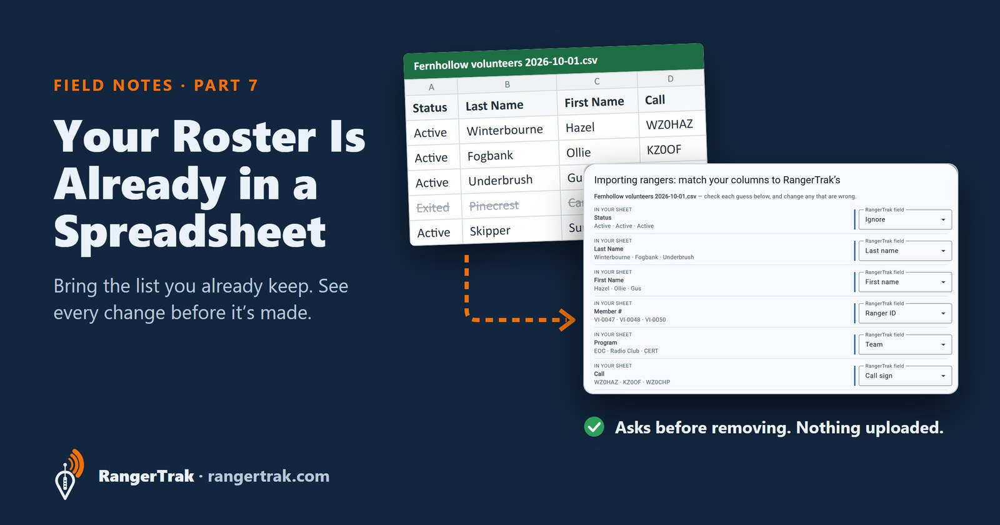
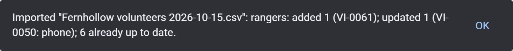

Field Notes · Part 7
Your Roster Is Already in a Spreadsheet

RangerTrak is a free, open-source radio log and map for the scribe at a CERT, ACS/ARES, SAR or wildland-fire command post. Log who, where, when and what off the radio; it maps them. It works offline once set up, and prints the Form 309 Communications Log and the ICS-213. I built it. It’s AGPL and will stay free. Try it at rangertrak.org, no account or install needed.
Every group I’ve worked with already has its people on a list. Usually more than one: the CERT roster the county keeps, the radio club’s member sheet, a neighborhood team’s phone tree, the EOC’s own staff list. They live in Excel, in Google Sheets, or in whatever the county’s volunteer system exports. Nobody keeps their roster in the shape a new piece of software wants.
Until this month, RangerTrak wanted exactly that: a file in its own format, which in practice meant someone retyping the roster. That’s an evening’s work nobody volunteers for, and it’s the reason a scribe ends up with a laptop that knows nobody’s name. As of version 0.99.33, it takes the list you already have.
Why the roster matters at all
A radio log works without one. “Rim Two, at the second tunnel” can be written down by anyone. But a roster is what turns a call sign into a person: a name, a phone number to try when the radio goes quiet, a team, a photo so the scribe knows who’s at the table. It’s also what lets the entry screen fill in a name as you type the first letters of a call. On paper, the roster is the various sheets clipped to the back of the log. In RangerTrak it’s the Rangers page, and it was the hardest part to fill.
Take the sheet you have
![RangerTrak's dialog 'Importing rangers: match your columns to RangerTrak's' for a file
called Fernhollow volunteers 2026-10-01.csv. Each column in your sheet is listed with three
example values beside RangerTrak's guess for it: Status ignored, Last Name and First Name joined into a name, Member # as Ranger ID,
Program as Team, Call as Call sign, Cell as Phone, Email and Home Address ignored and not
stored, Last Training ignored. A ticked box skips rows whose Status is Exited, Inactive,
Retired, Resigned, Terminated, Former, Removed or Left. A tip below it: one unique name per
team, with the town or department for mutual aid.](img/07-column-guess.jpg)
On the Rangers page, Import a list… opens an Excel or CSV file. It doesn’t need to look like anything in particular. RangerTrak reads the column headings, shows you three example values from each, and guesses what each one is. “Member #” is probably the ID your people already know, such as a REW number like VI-0050. “Call” is a call sign, “Cell” is a phone number, “Program” is a team. First and last names in separate columns get joined. You check the guesses, fix any that are wrong, and move on.
Why the ID and the call sign matter: they’re how people identify themselves on the radio. Some call in by member number, some by call sign. At the entry screen the scribe types whichever one they heard, or the person’s name, and RangerTrak finds them.
This screenshot is from a roster with deliberately messy column names, built to look like a county volunteer export: a Status column, names split in two, phone numbers typed three different ways, an e-mail column, home addresses, the date of each person’s last training. Some of that RangerTrak uses. Some it ignores. And some it refuses: RangerTrak doesn’t keep home addresses or e-mail addresses, so those columns are left out and the preview says so. A scribe doesn’t need them, and a laptop at a command post shouldn’t carry them.
If the sheet has a Status column, RangerTrak offers to skip members who have left: rows marked Exited, Inactive, Retired and the like. Most county exports include them, and nobody wants a former volunteer offered as a name at the entry screen.
It also remembers your choices. The next time you import a sheet with the same headings, the guesses are already yours and it’s one click on Continue. It remembers the headings only, never anyone’s details.
See what will change before anything does

Before it saves anything, RangerTrak shows a preview: how many people it would add, update, leave unchanged and skip, and for anyone updated, which details would change. It also points out what looks odd: a row with no ID, no call sign and no name, or an ID that matches one person while the call sign matches another. People with no call sign are fine. Plenty of CERT members aren’t licensed with the FCC, and the preview says that’s expected.
Then you choose. Add to roster is the usual one: add the new people, update the ones already there. Replace roster… starts over, and it’s a separate button that asks you to confirm. Afterwards RangerTrak tells you, by name, who it added and who it updated.


Nothing is deleted, and a blank cell never erases
Two rules sit underneath all of this, and they’re the ones I’d want if it were my roster.
- An import never removes anyone on its own. People who aren’t in the file stay on the device as they were. (There’s one exception, and it’s a question you answer. It’s below.)
- A blank cell never erases a value. If the radio club’s sheet has no phone number for someone, the number from the CERT list stays. The newest file wins only where it actually has something to say.
That second rule matters more than it sounds. Every list is missing something. Without it, importing the second list would quietly wipe out half of what the first one gave you, and you’d find out when you went to call someone.
Build it up, one list at a time

You don’t need one master list before you start. Import the CERT roster, then the radio club’s, then Team D’s, and the roster grows each time. Someone on two lists is updated, not doubled.
One tip for the Team column, which the import dialog also shows: each team needs a name that is unique across the whole mission. If teams from other towns come in on mutual aid, put the town or department in the name (“Burien CERT 2”, not just “CERT 2”).
Here’s how it knows it’s the same person: by ID first, then by call sign. That’s simple, and I want to be plain about what it misses. Someone with a member number on the CERT list and only a call sign on the club’s can turn up twice. The fix is to delete the extra row, or give them their ID on both lists. RangerTrak doesn’t try to match on names, because two Bob Smiths in one county is not a rare event.
When the list changes

Lists change: people join, move away, change numbers. So RangerTrak can remember each list you import. In the preview, give the list a name (it suggests one from the file name). That named list is what RangerTrak calls a layer: one imported roster, such as Fernhollow volunteers.
Import a newer copy under the same name, and RangerTrak asks about anyone who has dropped off it: 1 person is no longer in Fernhollow volunteers. Remove them? The answer starts at No. That’s the one exception to “nothing is deleted”, and it’s your decision. A yes removes only people that list brought in, never anyone another list also has or anyone added by hand. Radio log entries are never changed.
After the event: changes, the final report, and the next scribe

The roster on a command-post laptop is a copy. Your spreadsheet stays the master. But things happen at the desk during an event: a walk-up volunteer gets added, someone’s phone number gets corrected. Those changes are on that one device.
Export changes saves just those: the people added or edited at the desk, with a column saying which. Hand it to whoever keeps the master list, so the next import doesn’t bring the old number back. Export roster saves the whole thing, as Excel or CSV. That’s also the roster to submit with the mission’s final report, and it goes straight back into RangerTrak with nothing to fix.
Switching scribe laptops partway through a long mission is a different job. The roster alone isn’t enough there: the next scribe needs the radio log and the places too. If the next laptop is blank, use Back up mission on this one and Restore mission on that one. If it already has entries of its own (a second scribe, or the next shift’s laptop), use Hand over to another scribe on the Radio Log page: one file with the people, the places and every entry, which the other laptop merges in without replacing anything. Merging the same file twice adds nothing.
And keep the paper. Print roster gives a contact sheet by team, and I’d put one in the go-kit beside the paper log. It has names and phone numbers on it, so treat it the way you treat the spreadsheet.
Google Sheets and OneDrive
RangerTrak reads files, not links. If your list is in Google Sheets, use File → Download and pick Excel or CSV, then import that file. OneDrive and Excel online have a Download a copy in the same place. On a phone or computer, the file picker can open the downloaded copy straight from your Drive or OneDrive folder.
Please don’t use Google Sheets’ “Publish to the web” to get a roster anywhere. It puts every name and phone number at a public address anyone can find. Downloading a file is safe; publishing it isn’t.
Where your roster goes
Nowhere. RangerTrak reads the file in your browser. Nothing is uploaded, there’s no account, and there’s no server on the other end to send it to. The roster lives on that device, and it’s stored there unencrypted unless you turn on device encryption (Mission → Data safety), which asks for a passphrase each time the app opens. After an event, delete the roster from any device that doesn’t belong to your group.
The step-by-step version, with the template’s columns and what each one is for, is Loading your roster, in the app’s own docs.
Try it in ten minutes
- Open rangertrak.org in a spare browser or a new browser profile, so nothing of yours is replaced. Go to Rangers.
- Under Import, export & print, use Download template (Excel). Its Example sheet has made-up people to copy into the Roster sheet. Or make a small sheet of your own with made-up names: please don’t try this with your real roster on a borrowed machine.
- Import it. Look at the guesses, change one, and read the preview before you add.
- Change a phone number in your sheet, delete one person, add one, and import it again under the same layer name. Watch what it asks.
- Try Export roster, then import that file. The preview should say everyone is unchanged.
Rather be led through it? Module 4 of the RangerTrak Tour Guide, Set up your own exercise, walks you through it hands-on. New to RangerTrak? Start the tour.
Tell me
- Did it guess your columns right? Tell me the headings it got wrong (just the headings, never the contents), and I’ll teach it.
- How many lists does your group really have, and who keeps each one?
- Is matching by ID, then call sign, good enough for your people, or do you have members who’d turn up twice?
Use the feedback form (start with “Blog 7”), Help → feedback inside the app, or email RangerTrak [at] steadyeoc [dot] com.
One question this post raises, and doesn’t answer: the “team” column says CERT, but at an incident, a team is three people walking the rim together. What should RangerTrak mean by a team? I haven’t decided, on purpose. That gets its own post, once I’ve talked with more of you.
The series
- The Paper Log, Without the Paper
- Hot, Warm, Cold
- However They Read It Out: coordinates and maps
- From Radio Log to Form 309 and ICS-213
- More Than One Laptop: field phones, report handoff, a live view for the IC
- What’s Missing, and Who Decides
- Your Roster Is Already in a Spreadsheet (this post)
- Shift Change: Op Periods, Scribes and Laptops
- After the Mission: Summaries, AAR and the Final Report
- Field Phones, Up Close
- RangerView
- People, Teams and Places: help me get this right
Next: Shift Change. The end of an operational period, the next scribe, and swapping laptops on a long mission, without losing a single entry.